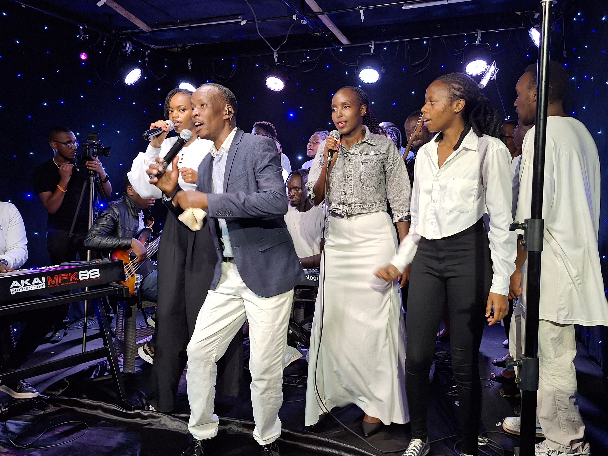

We are Tupos Ministers—a dynamic group of young, passionate worshippers called to raise a sound that echoes through generations. Rooted in purpose and driven by love for God, we minister through music that stirs hearts, revives spirits, and draws people into deeper intimacy with the Father.
From humble beginnings to powerful live recordings, our journey has been marked by grace and growth. Our latest live recording, “We Mwega Mwathani”, is a heartfelt offering of praise that celebrates God's goodness and faithfulness. It follows our debut album, “This Generation,” which ignited a wave of testimonies and spiritual renewal.
We are not just singers—we are a royal priesthood, a chosen generation, devoted to worship, prayer, and the pursuit of God's presence. Every melody we release is more than music; it’s a divine encounter, a prophetic declaration, and a call to know God intimately.
Whether in church, on stage, or in everyday life, we carry the sound of revival. We believe that intimacy with God births consistency, and consistency births transformation.
Welcome to our journey. Welcome to the sound of purpose. Welcome to Tupos Ministers.
Our journey to "We Mwega"
Intimacy=consistency
God has been, and continues to be, faithful!
The journey to our last live recording, “We Mwega Mwathani,” was nothing short of extraordinary. From the first prayer to the final note, it was a divine encounter wrapped in worship, unity, and overwhelming joy. As Tupos Ministers, we stepped into that moment not just as singers, but as vessels—young, passionate, and hungry for God’s presence.
The atmosphere was electric. Every voice lifted, every instrument played, and every heart bowed in reverence created a tapestry of praise that could only be described as heaven touching earth. We witnessed tears, testimonies, and transformations right in the room. It wasn’t just a recording—it was revival.
Behind the scenes, it took faith, sacrifice, and relentless commitment. We prayed, fasted, rehearsed, and leaned into God’s grace. And He showed up—powerfully. “We Mwega Mwathani” became more than a song; it became a declaration of God’s goodness and a reminder that intimacy births consistency, and consistency births impact.
🤝 Partner With Us
As we prepare for even greater things—more recordings, outreaches, and moments of worship—we invite you to be part of this journey. Your support helps us:
Reach more souls with the sound of worship
Equip young ministers with tools and training
Host impactful live worship experiences
Produce music that glorifies God and transforms lives
Whether through prayer, financial support, or simply sharing our music, you become part of the Tupos story—a story of purpose, passion, and praise.
📩 Want to support or collaborate? Reach out to us at 0722578778.
Together, let’s raise a sound that impacts generations.
To all this, I say, Glory to God

What you said about this generation
Tupos ministers have inspired the world with their songs I especially love Mungu wangu it was a really good vibe and we did enjoy everything
Tupos ministers have really inspired me to write my personal songs They just have something in them especiall that they are serving when that young